Product Poster Library (98 posters)
High-resolution marketing posters generated from official product datasheets — landscape 16:9 (2K) equipment posters, plus portrait infographic, A4 print-master and 4:3 bench-top equipment posters. Click a poster to open the full image; SEO title, description and tags for each product live in the matching .meta.json file in this repository.

SLD350L + SUL350L — 1.2M LED PCB Magazine Loader & Unloader
SMEMA compatible automatic PCB magazine handling for EMS factories. ~30 s changeover, 1200×350 mm boards.
Download PNG
SM-AGV30KG-B — Magnetic Navigation AGV Transport Robot
Backpack-type intelligent transport trolley for wave soldering furnaces, SMT fixtures and line materials in EMS factories.
Download PNG
SM-AGV30KG-A — Two-Way Driving Magnetic AGV Trolley
Light, low-power two-way backpack handling car for wave soldering fixtures and SMT line materials, guided by magnetic strip.
Download PNG
SM-AGV40KG-A — Go-and-Return Driving AGV Trolley
Two-way backpack intelligent trolley for wave soldering furnace fixtures and production line materials with super-long battery life.
Download PNG
SM-AGV30KG-C — Cabinet-Type Magnetic AGV Trolley
Enclosed backpack transport trolley carrying jigs, materials and office loads in electronics production workshops.
Download PNG
SM-AGV-H — Smart Route AGV with Touch Screen
Backpack intelligent trolley with 4.3-inch touch screen, automatic route planning and RFID site selection for SMT and wave soldering lines.
Download PNG
SM-AGV40KG-710A — Drum-Type Magnetic AGV Trolley
Two-way backpack trolley with optional drum plate for moving reels, fixtures and line materials between SMT workstations.
Download PNG
SM-AGV50KG-550A — Backpack AGV Transport Trolley
Simple, lightweight and ultra-long-endurance backpack trolley for wave soldering fixtures, SMT transport and office logistics.
Download PNG
SM-AGV60KG-A — Ultrasonic Radar AGV Robot
Knapsack-type intelligent trolley with ultrasonic radar, emergency stop and 4.3-inch touch screen for electronics workshops.
Download PNG
SM-AGV100KG-A — Heavy-Duty 100KG AGV Transport Robot
Two-way backpack handling trolley for wave soldering fixtures, SMT materials and industrial logistics such as garment factories.
Download PNG
S-AGV150KG-A — 150KG Ultra-Capacity AGV Robot
Lightweight-body trolley carrying up to 150 kg of wave soldering fixtures, SMT jigs and production materials.
Download PNG
SM-AGV-SMT-A — SMT Magazine Rack Transport AGV
Purpose-built AGV that automatically loads and unloads ESD PCB magazine racks to and from SMT board loading machines.
Download PNG
SM-AGV100KG-T — Latent Lifting AGV Transfer Robot
Low-profile trolley that slides under carts and lifts them 50 mm to move materials across electronics workshops.
Download PNG
SM-AGV100KG-G — Lifting & Traction AGV Robot
Latent lifting traction car that both carries and tows carts, racks and wave soldering fixtures along the line.
Download PNG
SM-AGV100KG-K — Ultra-Slim AGV Transport Robot
Only 220 mm tall backpack trolley that slips under racks and fixtures to move them anywhere in the workshop.
Download PNG
SM-AGV100KG-L — Tow-Deck AGV Cart Puller
Backpack trolley with a low 170 mm tow deck that pulls custom shelves and material carts along magnetic lines.
Download PNG
SM-AGV-810 — Automatic Contact Charging Pile
AGV docking charging station: the trolley drives to the pile and charges automatically when power is low, retracts when full.
Download PNG
SM-AGV-820 — Non-Contact Wireless Charging Pile
Electromagnetic induction charging station — contact-free docking with launch and receiving plates, zero wear.
Download PNG
SRT7001 — Automated Reel Terminal Feeder
Automated reel terminal cutting & feeding for SMT/THT lines: 0.8 s per material, ±0.5 mm precision, PLC with IO or self-control.
Download PNG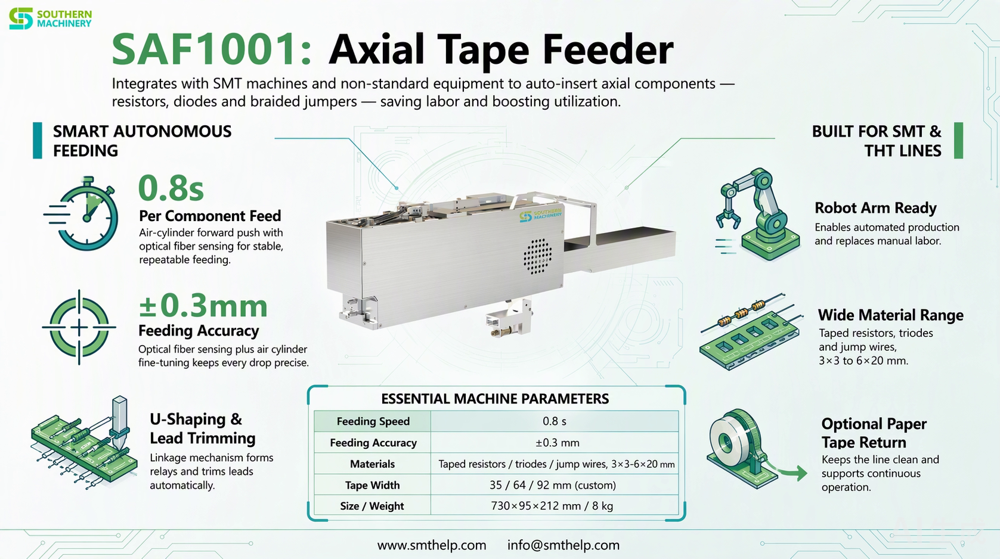
SAF1001 — Axial Tape Feeder
Integrates with SMT machines and non-standard equipment to auto-insert axial components — resistors, diodes and braided jumpers — saving labor and boosting utilization.
Download PNG{kind=link}
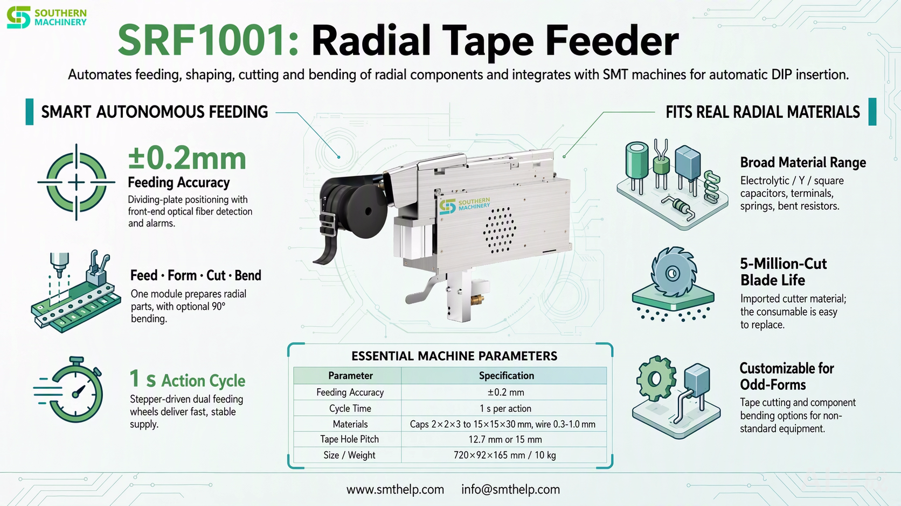
SRF1001 — Radial Tape Feeder
Automates feeding, shaping, cutting and bending of radial components and integrates with SMT machines for automatic DIP insertion.
Download PNG{kind=link}
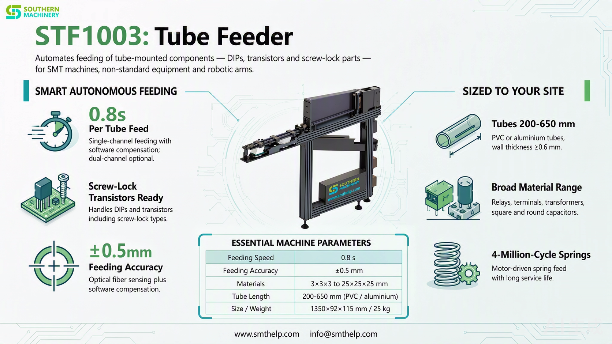
STF1003 — Tube Feeder
Automates feeding of tube-mounted components — DIPs, transistors and screw-lock parts — for SMT machines, non-standard equipment and robotic arms.
Download PNG{kind=link}
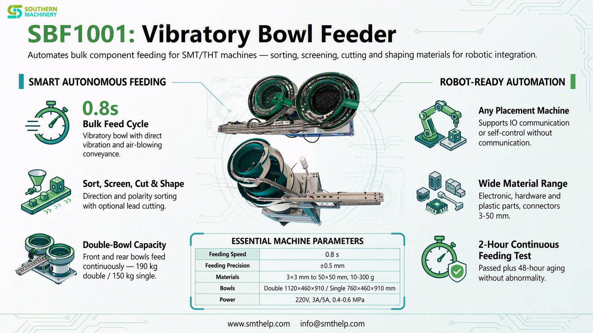
SBF1001 — Vibratory Bowl Feeder
Automates bulk component feeding for SMT/THT machines — sorting, screening, cutting and shaping materials for robotic integration.
Download PNG{kind=link}
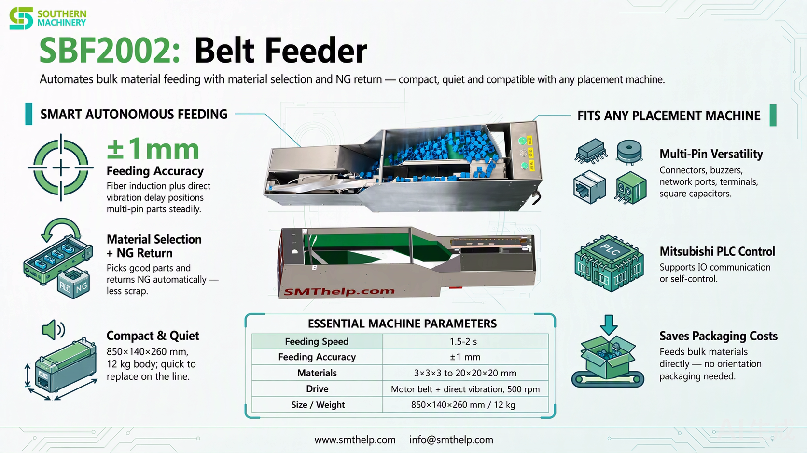
SBF2002 — Belt Feeder
Automates bulk material feeding with material selection and NG return — compact, quiet and compatible with any placement machine.
Download PNG{kind=link}
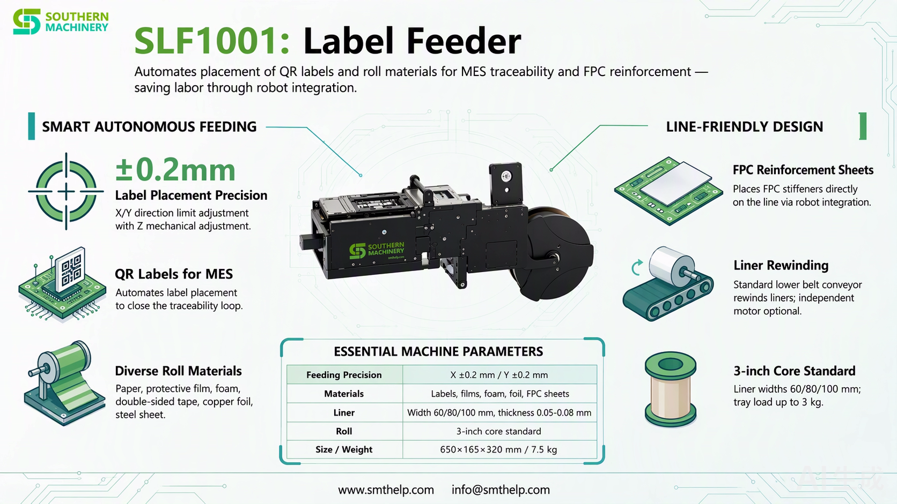
SLF1001 — Label Feeder
Automates placement of QR labels and roll materials for MES traceability and FPC reinforcement — saving labor through robot integration.
Download PNG{kind=link}
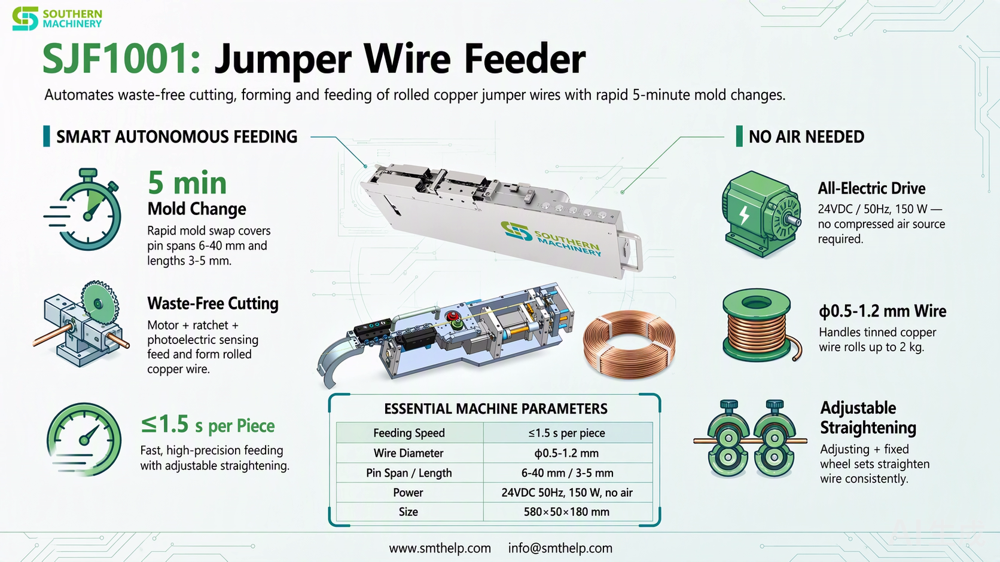
SJF1001 — Jumper Wire Feeder
Automates waste-free cutting, forming and feeding of rolled copper jumper wires with rapid 5-minute mold changes.
Download PNG{kind=link}
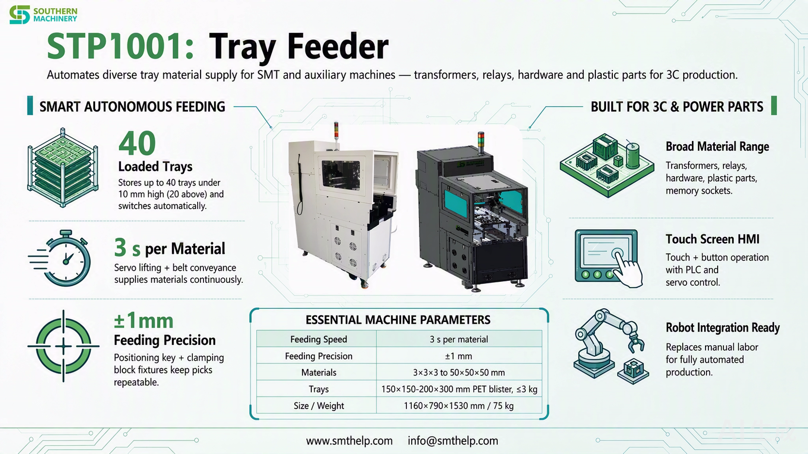
STP1001 — Tray Feeder
Automates diverse tray material supply for SMT and auxiliary machines — transformers, relays, hardware and plastic parts for 3C production.
Download PNG{kind=link}
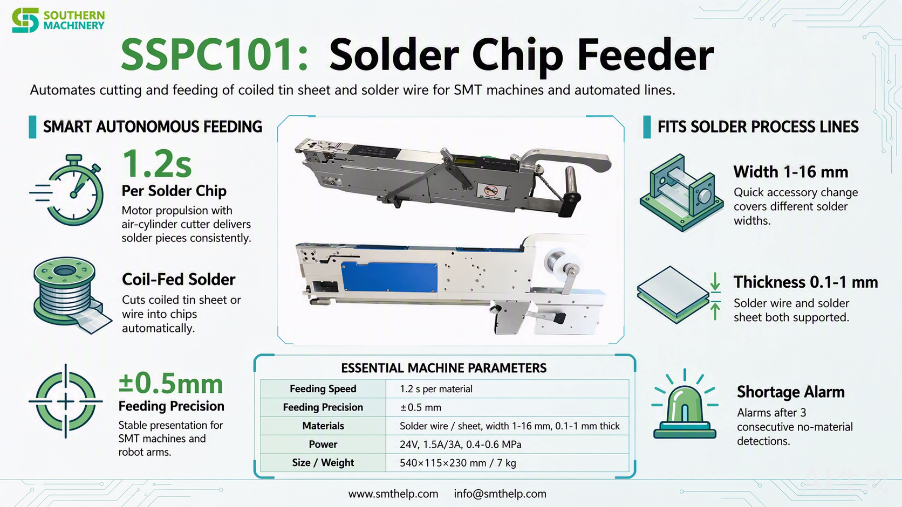
SSPC101 — Solder Chip Feeder
Automates cutting and feeding of coiled tin sheet and solder wire for SMT machines and automated lines.
Download PNG{kind=link}
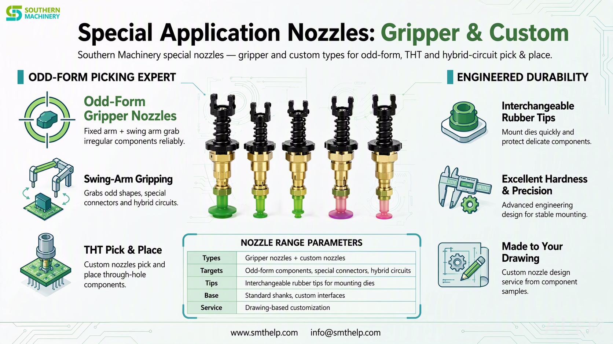
Special Nozzles — Gripper & Custom Nozzles
Southern Machinery special nozzles — gripper and custom types for odd-form, THT and hybrid-circuit pick & place.
Download PNG{kind=link}
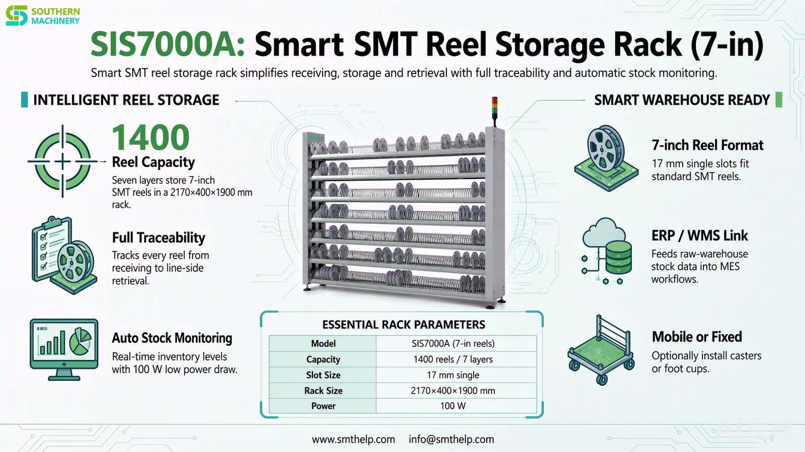
SIS7000A — Smart SMT Reel Storage Rack (7-in)
Smart SMT reel storage rack simplifies receiving, storage and retrieval with full traceability and automatic stock monitoring.
Download PNG{kind=link}
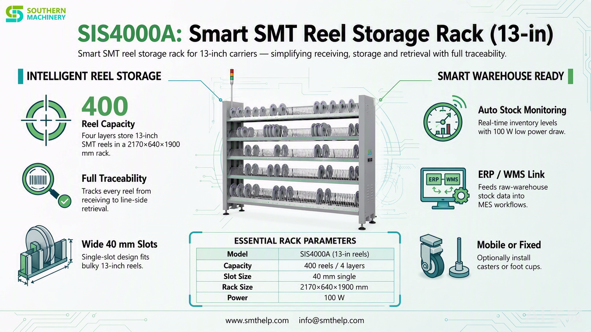
SIS4000A — Smart SMT Reel Storage Rack (13-in)
Smart SMT reel storage rack for 13-inch carriers — simplifying receiving, storage and retrieval with full traceability.
Download PNG{kind=link}
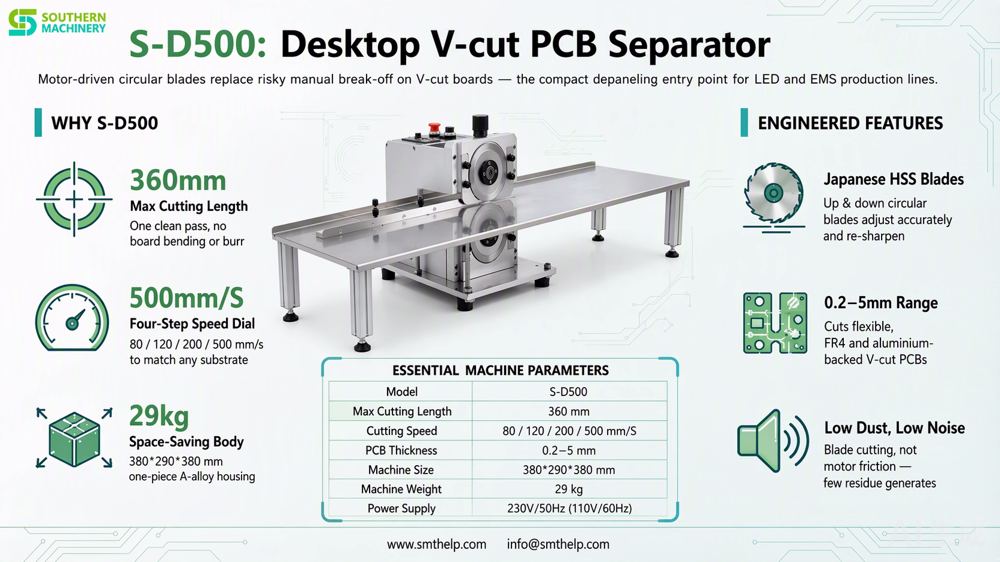
S-D500 — Desktop V-cut PCB Separator
Compact circular-blade V-cut PCB separator: 360 mm cutting length, 0.2-5 mm boards, 80-500 mm/s. For LED and EMS factories replacing manual break-off.
Download PNG{kind=link}
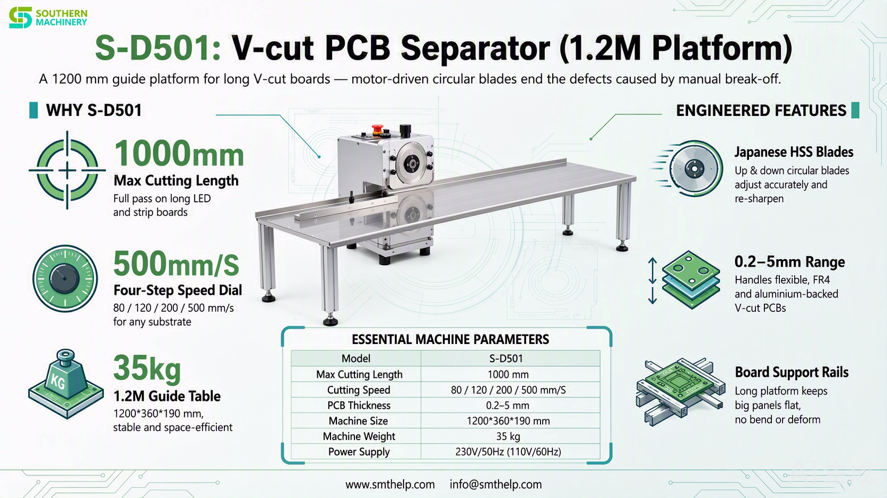
S-D501 — V-cut PCB Separator (1.2M Platform)
1200 mm guide platform circular-blade V-cut PCB separator: 1000 mm cutting length, 0.2-5 mm boards, 80-500 mm/s. For long LED strip boards in EMS factories.
Download PNG{kind=link}
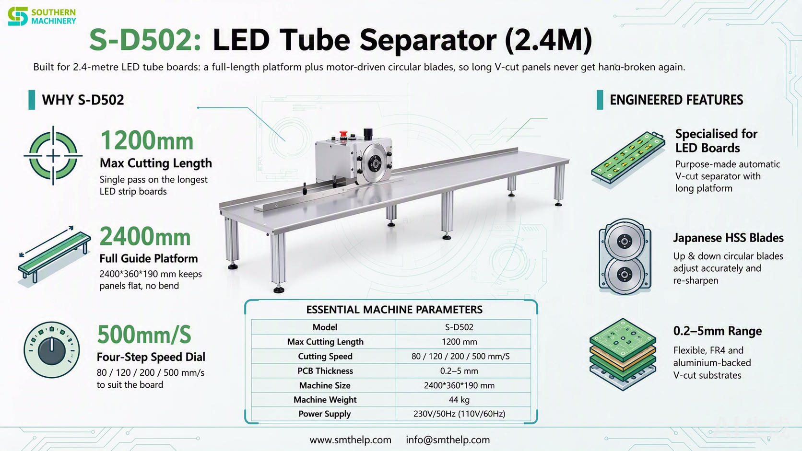
S-D502 — LED Tube Separator (2.4M)
2.4 metre platform LED tube separator: 1200 mm cutting length, 0.2-5 mm boards, 80-500 mm/s circular blades. Built for long LED strip panels in EMS factories.
Download PNG{kind=link}
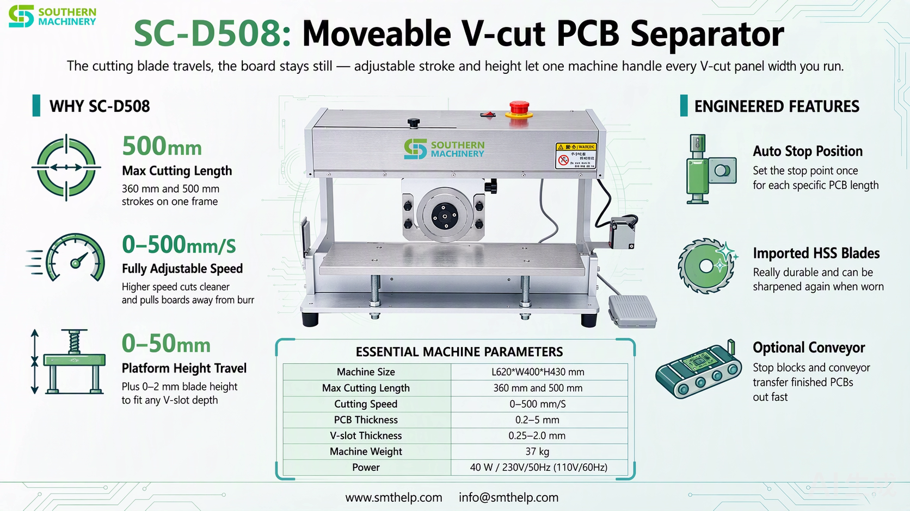
SC-D508 — Moveable V-cut PCB Separator
Moveable-blade V-cut PCB separator: 360 and 500 mm strokes, 0-500 mm/s, 0.2-5 mm boards, 0-50 mm platform travel. Auto stop position for EMS and LED lines.
Download PNG{kind=link}
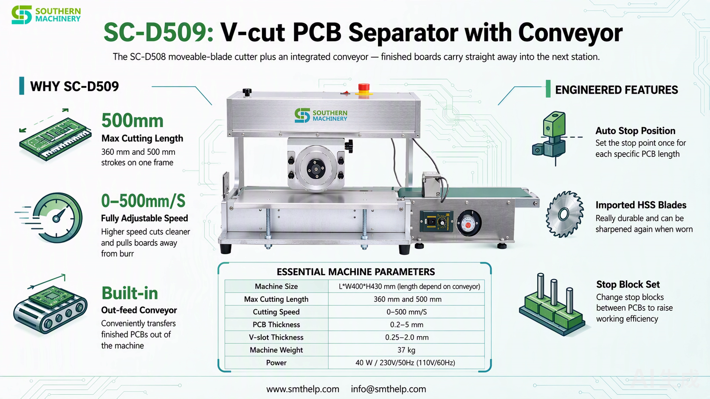
SC-D509 — V-cut PCB Separator with Conveyor
Moveable-blade V-cut PCB separator with built-in out-feed conveyor: 360 and 500 mm strokes, 0-500 mm/s, 0.2-5 mm boards, 40 W. For inline EMS and LED lines.
Download PNG{kind=link}
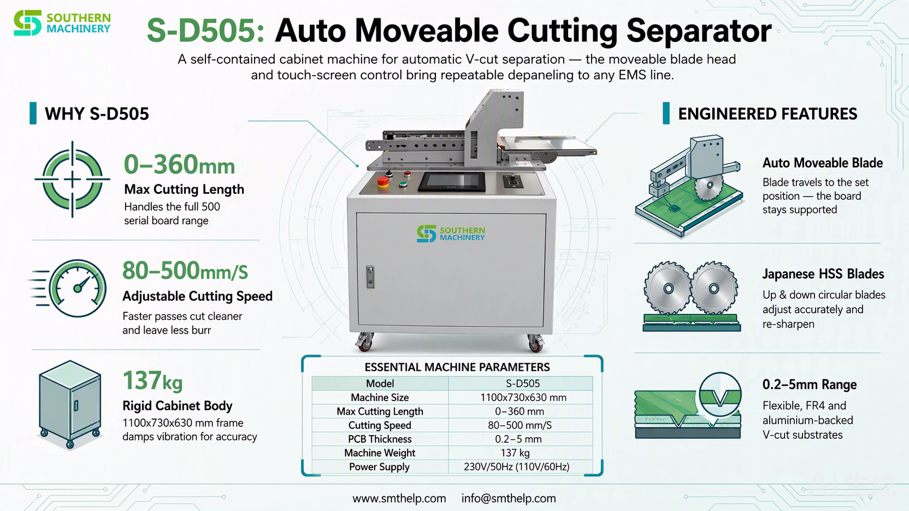
S-D505 — Auto Moveable Cutting Separator
Cabinet-type automatic moveable-blade V-cut PCB separator: 0-360 mm cutting length, 80-500 mm/s, 0.2-5 mm boards, touch-screen control, 1100x730x630 mm.
Download PNG{kind=link}
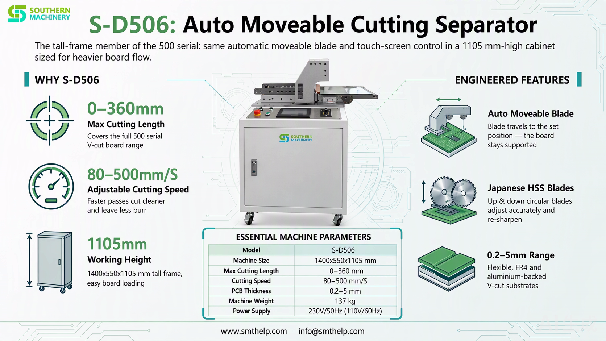
S-D506 — Auto Moveable Cutting Separator
Tall-frame automatic moveable-blade V-cut PCB separator: 0-360 mm cutting length, 80-500 mm/s, 0.2-5 mm boards, 1105 mm working height for easy board loading.
Download PNG{kind=link}
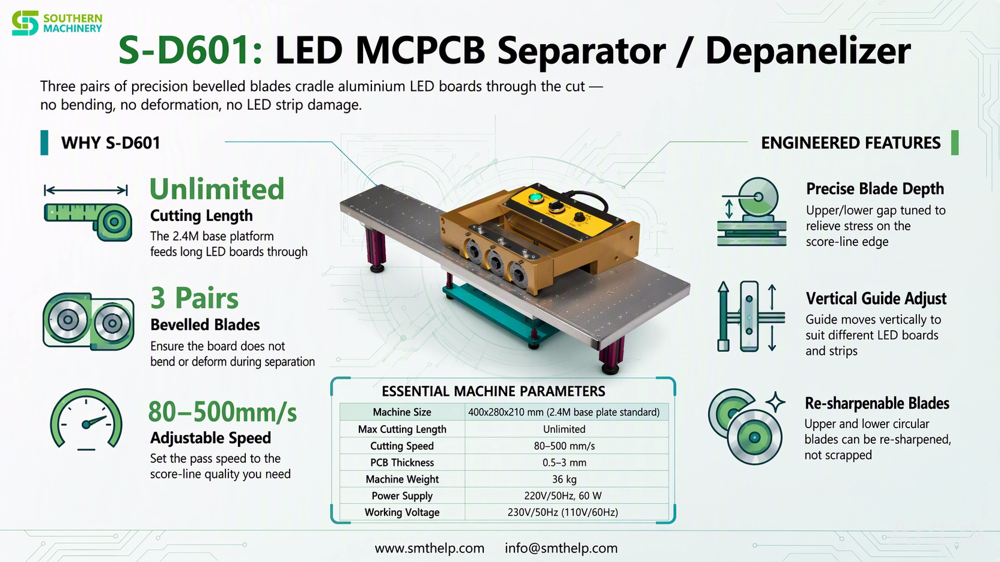
S-D601 — LED MCPCB Separator / Depanelizer
Three-pair bevelled-blade LED MCPCB separator: unlimited cutting length on the 2.4M base, 80-500 mm/s, 0.5-3 mm aluminium boards with no bending or LED damage.
Download PNG{kind=link}
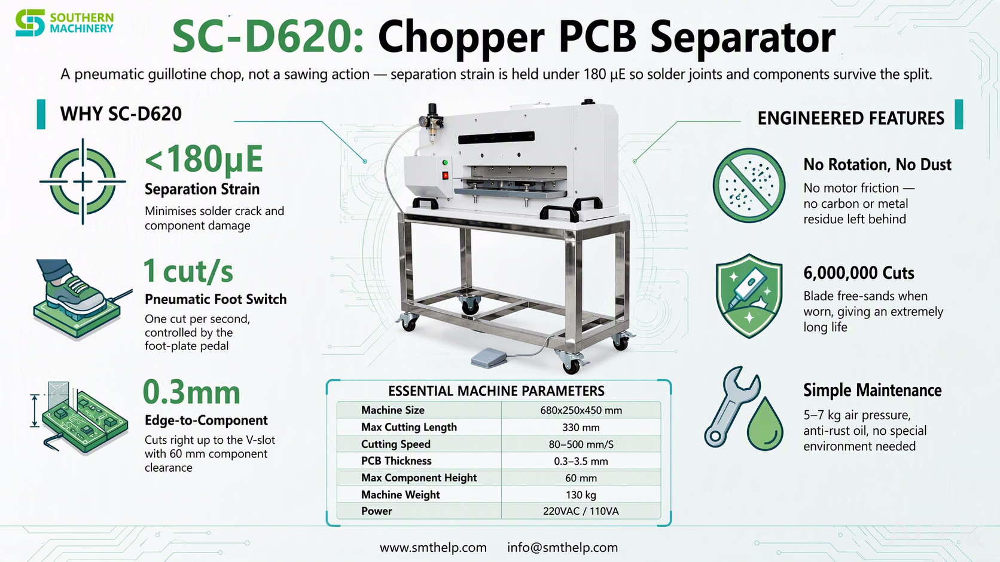
SC-D620 — Chopper PCB Separator
Pneumatic guillotine chopper V-cut PCB separator: strain under 180 uE, 330 mm cutting length, 0.3-3.5 mm boards, 60 mm component clearance, one cut per second.
Download PNG{kind=link}
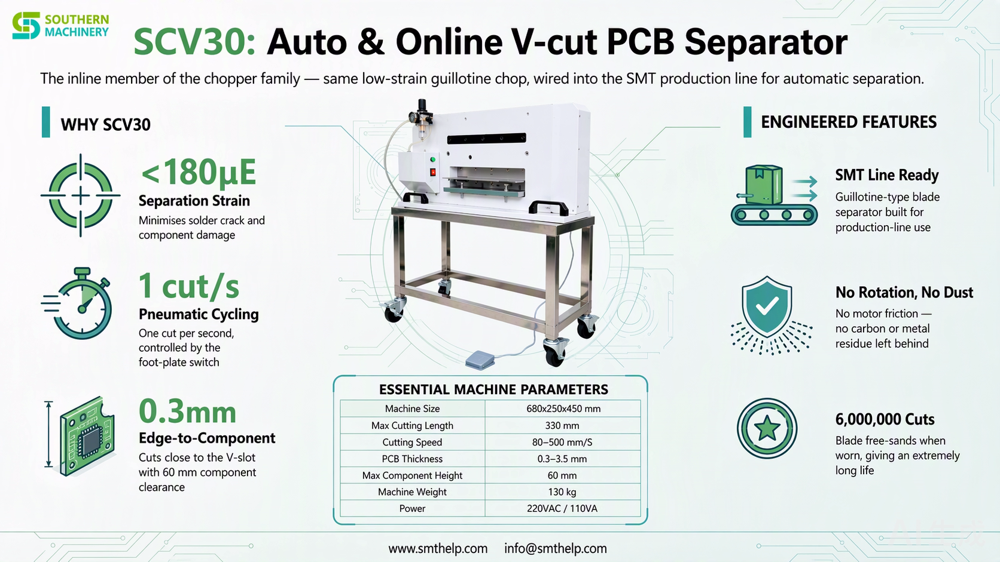
SCV30 — Auto & Online V-cut PCB Separator
Inline pneumatic chopper V-cut PCB separator for SMT lines: under 180 uE strain, 330 mm cutting length, 0.3-3.5 mm boards, 60 mm component clearance, 1 cut/s.
Download PNG{kind=link}
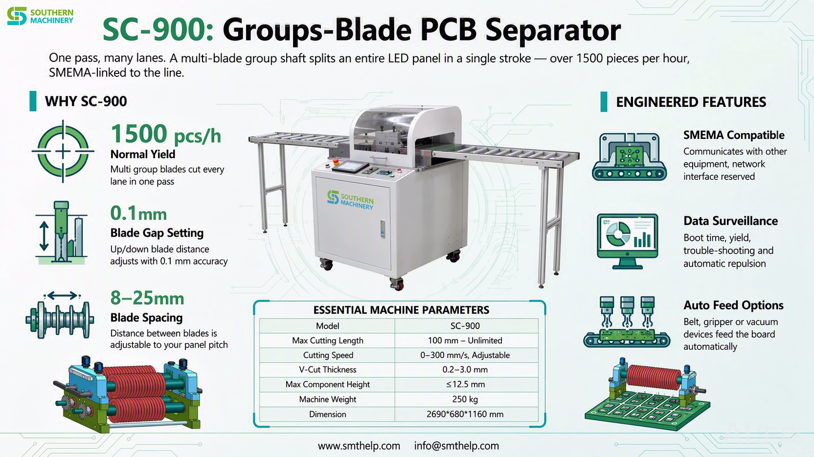
SC-900 — Groups-Blade PCB Separator
Multi-blade group shaft V-cut PCB separator: 1500 pcs/h, 100 mm to unlimited length, 0.2-3.0 mm boards, 0.1 mm blade gap accuracy, SMEMA compatible.
Download PNG{kind=link}
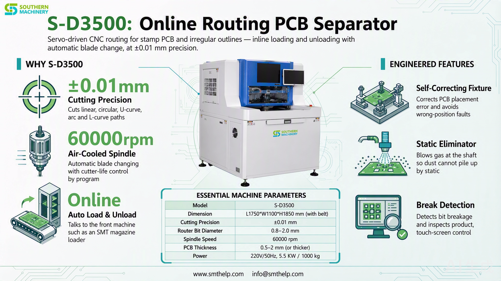
S-D3500 — Online Routing PCB Separator
Servo CNC online routing PCB separator: +/-0.01 mm precision, 60000 rpm air-cooled spindle, 0.8-2.0 mm bits, automatic blade change, inline load and unload.
Download PNG{kind=link}
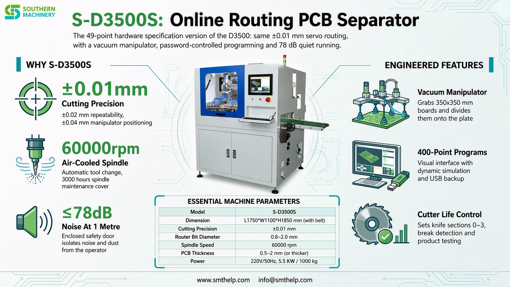
S-D3500S — Online Routing PCB Separator
49-point spec CNC routing PCB separator: +/-0.01 mm precision, 60000 rpm spindle, vacuum manipulator, <=78 dB enclosure, auto tool change for stamp PCB lines.
Download PNG{kind=link}
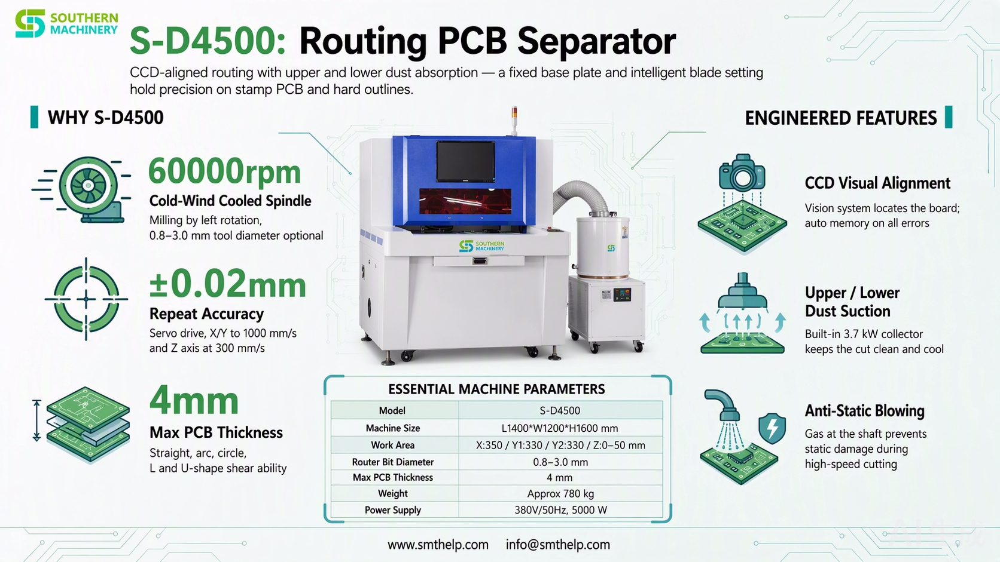
S-D4500 — Routing PCB Separator
CCD-aligned CNC routing PCB separator: +/-0.02 mm repeat accuracy, 60000 rpm spindle, 0.8-3.0 mm bits, up to 4 mm boards, built-in 3.7 kW dust collector.
Download PNG{kind=link}
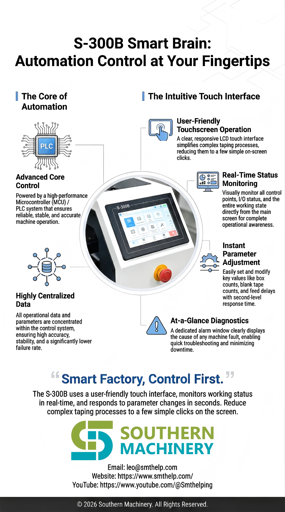
S-300B — Smart Brain: Automation Control at Your Fingertips
PLC/MCU core control, LCD touch HMI, real-time status monitoring, second-level parameter adjustment and at-a-glance alarm diagnostics. Smart factory, control first.
Download PNG{kind=link}
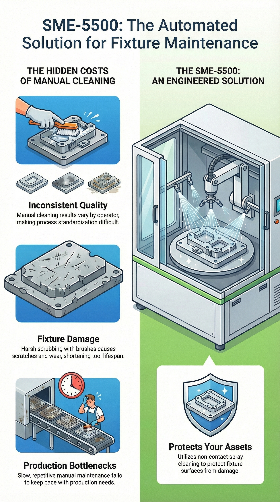
SME-5500 — Automatic SMT Fixture & Pallet Cleaning Machine
Ø1450 mm rotating basket with 360° spray-in-air coverage and 3-stage closed-loop filtration. Cleans 20-40 fixtures or wave soldering pallets per 30-40 minute wash-rinse-dry cycle in a full SUS304 body.
Download PNG{kind=link}
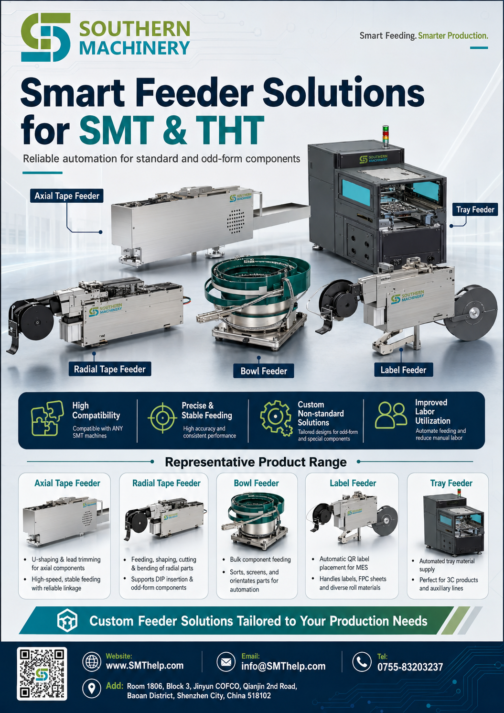
Smart Feeder Series — Smart Feeder Solutions for SMT & THT
Axial tape feeders with U-shaping and lead trimming, radial feeders for DIP and odd-form parts, bowl feeders for bulk components, MES-ready label feeders and automated tray feeders.
Download PNG{kind=link}
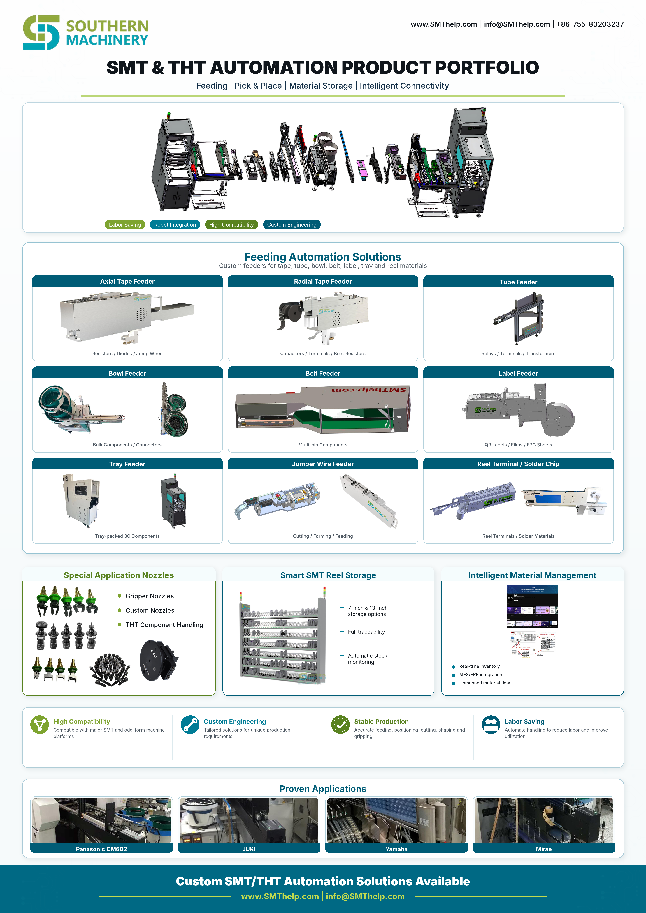
Product Portfolio — SMT & THT Automation (A4 print master)
Ten feeding automation solutions, special application nozzles, smart SMT reel storage and intelligent material management with MES/ERP integration. Proven on Panasonic CM602, JUKI, Yamaha and Mirae lines.
Download PNG{kind=link}
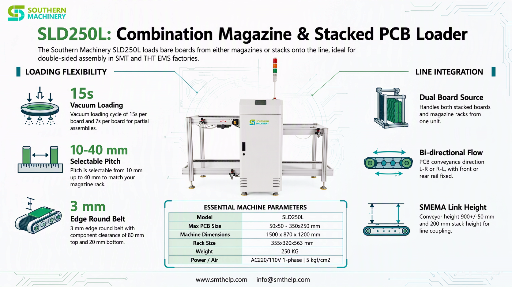
SLD250L — Combination Magazine & Stacked PCB Loader
Southern Machinery SLD250L combination magazine and stacked PCB loader handles boards up to 350×250 mm, with 15s vacuum loading for SMT and THT EMS lines.
Download PNG{kind=link}
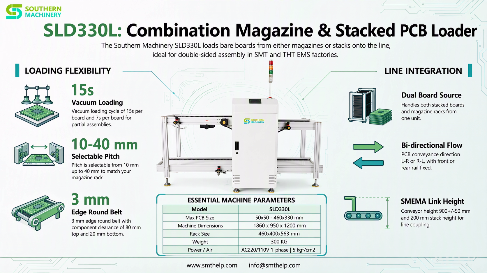
SLD330L — Combination Magazine & Stacked PCB Loader
Southern Machinery SLD330L combination magazine and stacked PCB loader handles boards up to 460×330 mm, with 15s vacuum loading for SMT and THT EMS lines.
Download PNG{kind=link}
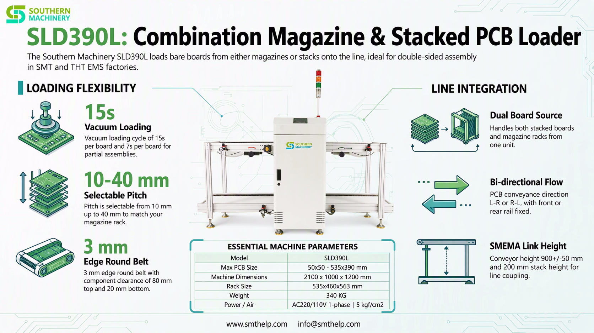
SLD390L — Combination Magazine & Stacked PCB Loader
Southern Machinery SLD390L combination magazine and stacked PCB loader handles boards up to 535×390 mm, with 15s vacuum loading for SMT and THT EMS lines.
Download PNG{kind=link}
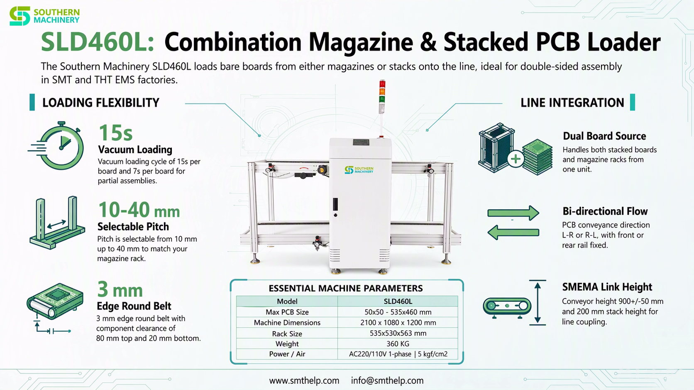
SLD460L — Combination Magazine & Stacked PCB Loader
Southern Machinery SLD460L combination magazine and stacked PCB loader handles boards up to 535×460 mm, with 15s vacuum loading for SMT and THT EMS lines.
Download PNG{kind=link}
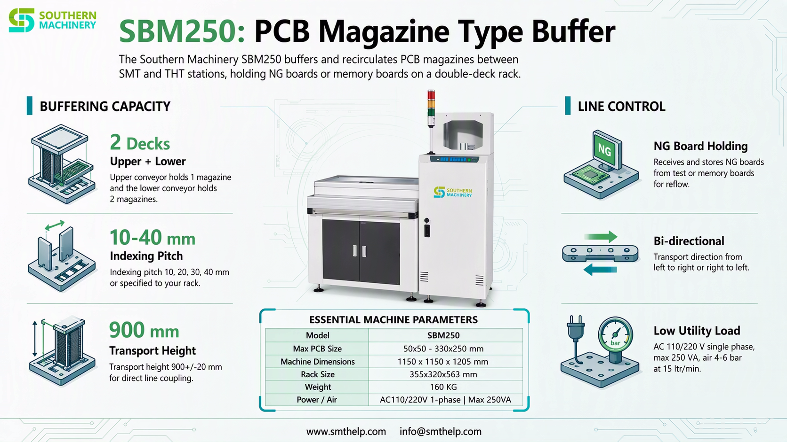
SBM250 — PCB Magazine Type Buffer
Southern Machinery SBM250 magazine type PCB buffer holds 1 upper and 2 lower magazines for NG or memory boards, boards up to 330×250 mm, in SMT and THT lines.
Download PNG{kind=link}
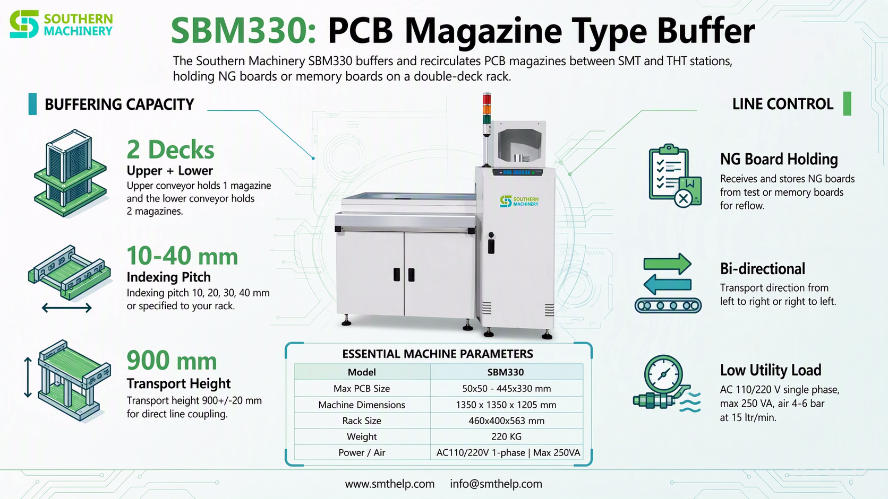
SBM330 — PCB Magazine Type Buffer
Southern Machinery SBM330 magazine type PCB buffer holds 1 upper and 2 lower magazines for NG or memory boards, boards up to 445×330 mm, in SMT and THT lines.
Download PNG{kind=link}
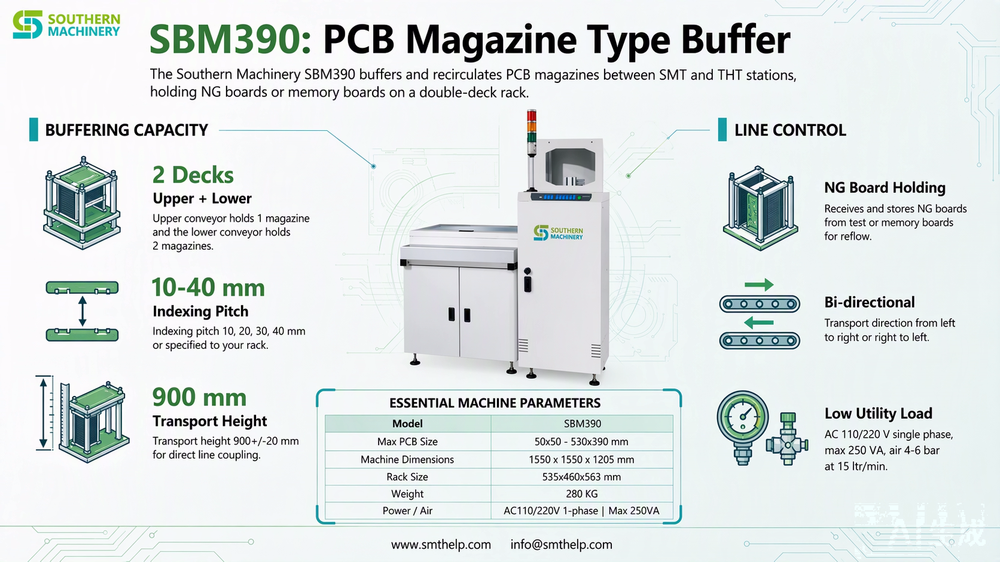
SBM390 — PCB Magazine Type Buffer
Southern Machinery SBM390 magazine type PCB buffer holds 1 upper and 2 lower magazines for NG or memory boards, boards up to 530×390 mm, in SMT and THT lines.
Download PNG{kind=link}
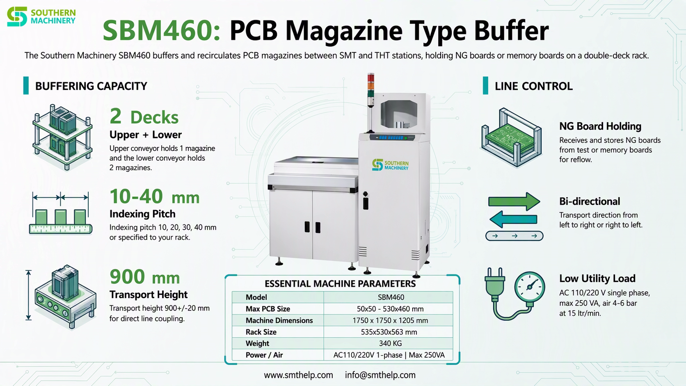
SBM460 — PCB Magazine Type Buffer
Southern Machinery SBM460 magazine type PCB buffer holds 1 upper and 2 lower magazines for NG or memory boards, boards up to 530×460 mm, in SMT and THT lines.
Download PNG{kind=link}
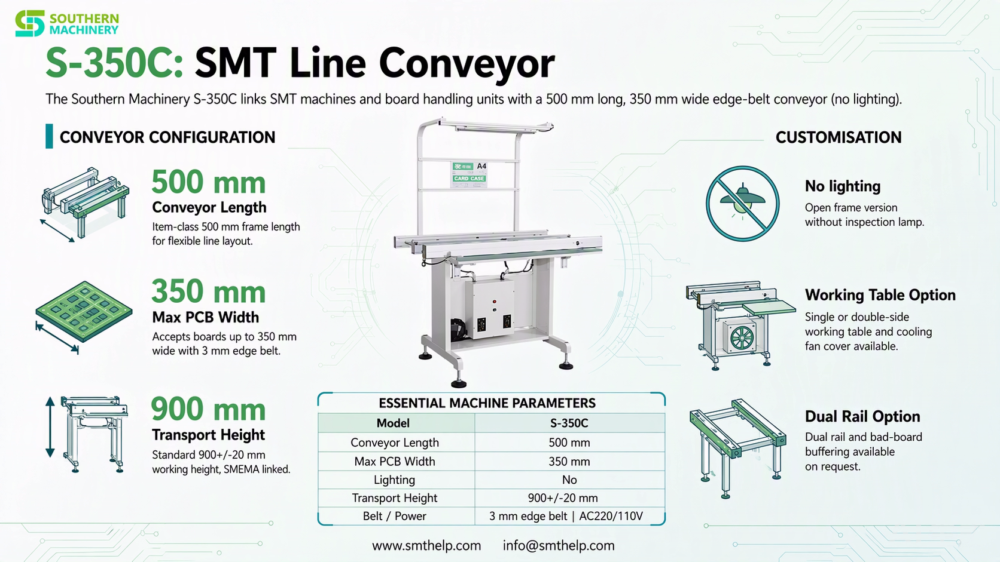
S-350C — SMT Line Conveyor
Southern Machinery S-350C SMT link conveyor, 500 mm long and up to 350 mm PCB width, no-lighting version, to connect SMT machines and board handlers.
Download PNG{kind=link}
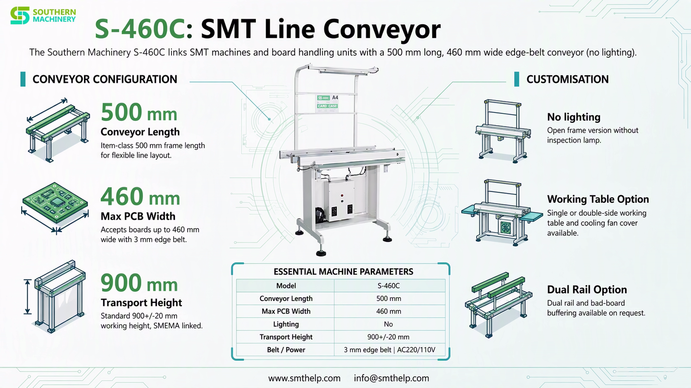
S-460C — SMT Line Conveyor
Southern Machinery S-460C SMT link conveyor, 500 mm long and up to 460 mm PCB width, no-lighting version, to connect SMT machines and board handlers.
Download PNG{kind=link}
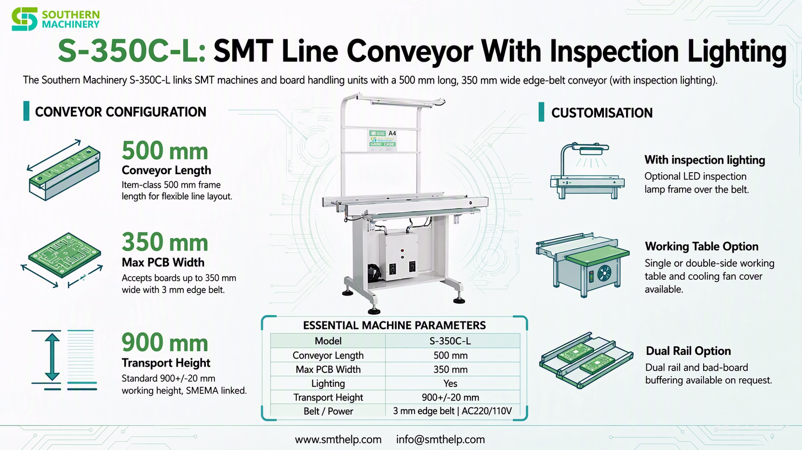
S-350C-L — SMT Line Conveyor With Inspection Lighting
Southern Machinery S-350C-L SMT link conveyor, 500 mm long and up to 350 mm PCB width, with LED inspection lighting, to connect SMT machines and board handlers.
Download PNG{kind=link}
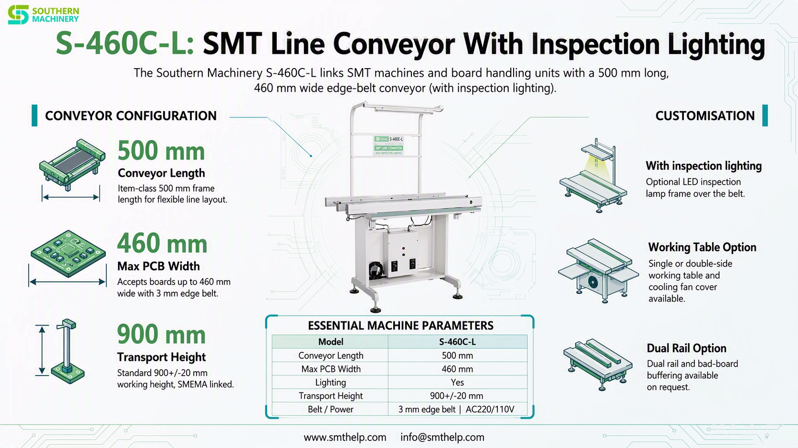
S-460C-L — SMT Line Conveyor With Inspection Lighting
Southern Machinery S-460C-L SMT link conveyor, 500 mm long and up to 460 mm PCB width, with LED inspection lighting, to connect SMT machines and board handlers.
Download PNG{kind=link}
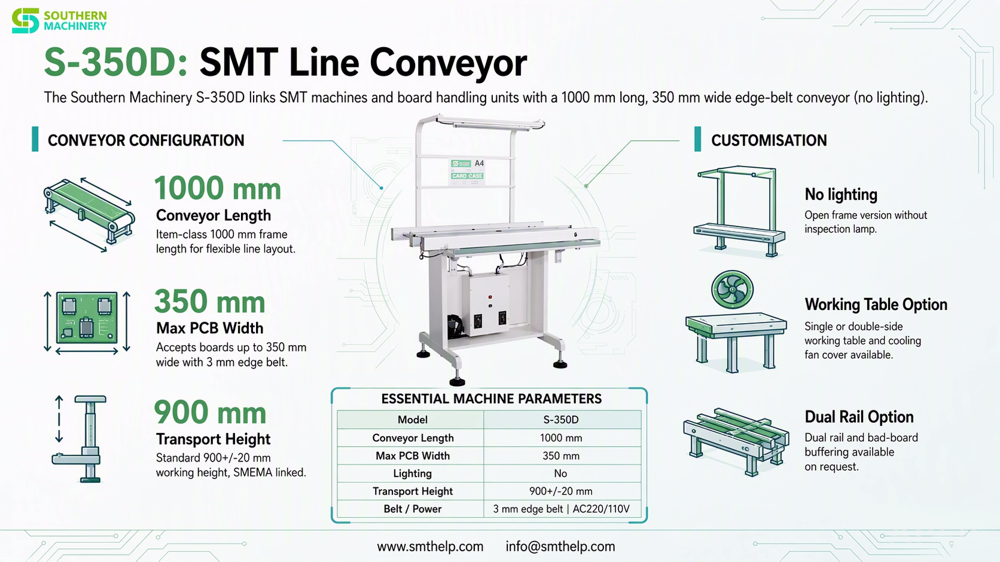
S-350D — SMT Line Conveyor
Southern Machinery S-350D SMT link conveyor, 1000 mm long and up to 350 mm PCB width, no-lighting version, to connect SMT machines and board handlers.
Download PNG{kind=link}
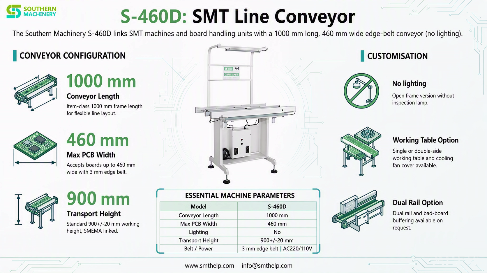
S-460D — SMT Line Conveyor
Southern Machinery S-460D SMT link conveyor, 1000 mm long and up to 460 mm PCB width, no-lighting version, to connect SMT machines and board handlers.
Download PNG{kind=link}
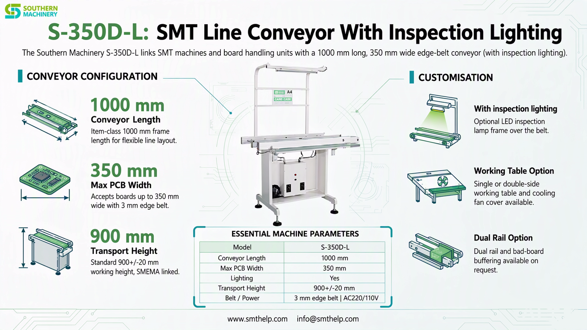
S-350D-L — SMT Line Conveyor With Inspection Lighting
Southern Machinery S-350D-L SMT link conveyor, 1000 mm long and up to 350 mm PCB width, with LED inspection lighting, to connect SMT machines and board handlers.
Download PNG{kind=link}
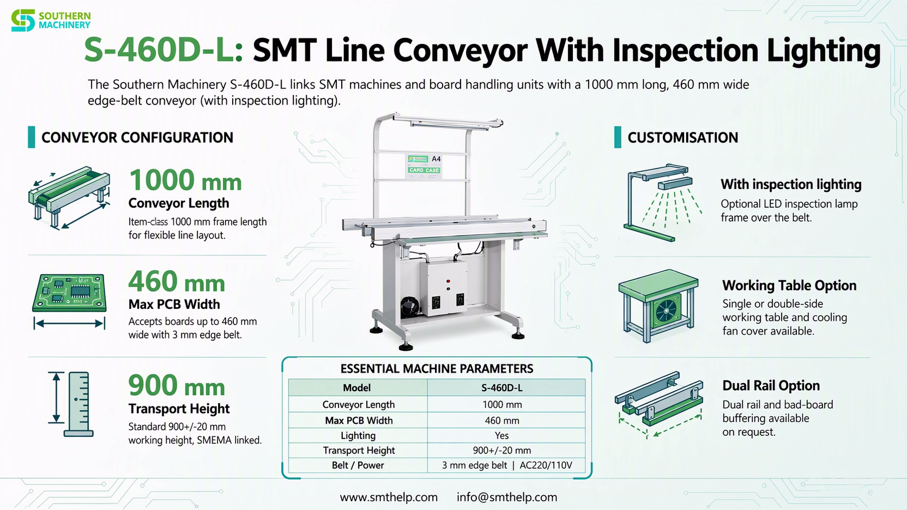
S-460D-L — SMT Line Conveyor With Inspection Lighting
Southern Machinery S-460D-L SMT link conveyor, 1000 mm long and up to 460 mm PCB width, with LED inspection lighting, to connect SMT machines and board handlers.
Download PNG{kind=link}
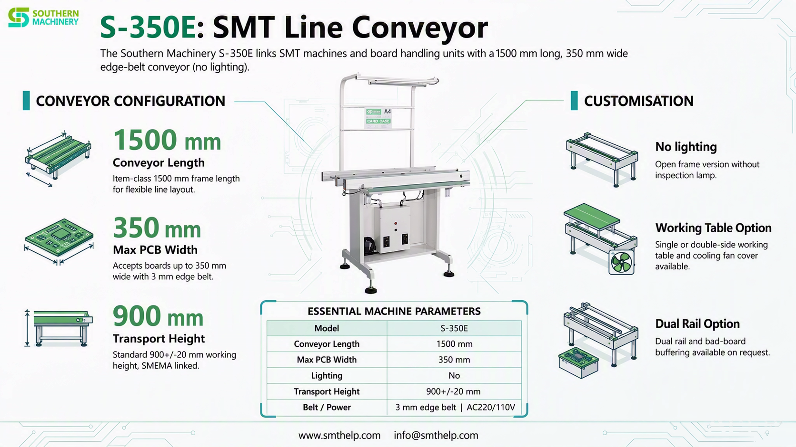
S-350E — SMT Line Conveyor
Southern Machinery S-350E SMT link conveyor, 1500 mm long and up to 350 mm PCB width, no-lighting version, to connect SMT machines and board handlers.
Download PNG{kind=link}
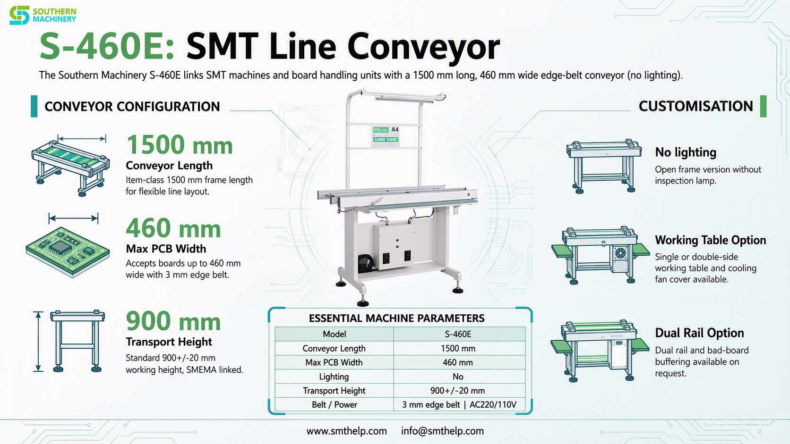
S-460E — SMT Line Conveyor
Southern Machinery S-460E SMT link conveyor, 1500 mm long and up to 460 mm PCB width, no-lighting version, to connect SMT machines and board handlers.
Download PNG{kind=link}
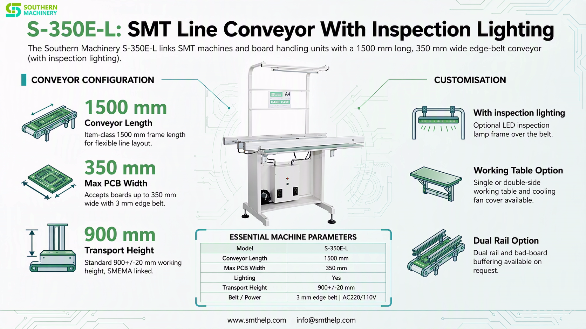
S-350E-L — SMT Line Conveyor With Inspection Lighting
Southern Machinery S-350E-L SMT link conveyor, 1500 mm long and up to 350 mm PCB width, with LED inspection lighting, to connect SMT machines and board handlers.
Download PNG{kind=link}
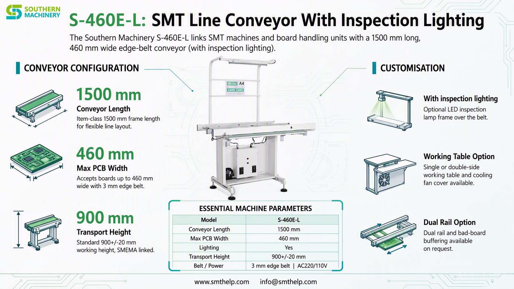
S-460E-L — SMT Line Conveyor With Inspection Lighting
Southern Machinery S-460E-L SMT link conveyor, 1500 mm long and up to 460 mm PCB width, with LED inspection lighting, to connect SMT machines and board handlers.
Download PNG{kind=link}
SLD250 — PCB Magazine Loader
Southern Machinery SLD250 PCB magazine loader feeds SMT and THT lines with about 30 second tank replacement, boards up to 330×250 mm, 1 upper and 1 lower magazine.
Download PNG{kind=link}
SLD330 — PCB Magazine Loader
Southern Machinery SLD330 PCB magazine loader feeds SMT and THT lines with about 30 second tank replacement, boards up to 445×330 mm, 1 upper and 1 lower magazine.
Download PNG{kind=link}
SLD390 — PCB Magazine Loader
Southern Machinery SLD390 PCB magazine loader feeds SMT and THT lines with about 30 second tank replacement, boards up to 530×390 mm, 1 upper and 1 lower magazine.
Download PNG{kind=link}
SLD460 — PCB Magazine Loader
Southern Machinery SLD460 PCB magazine loader feeds SMT and THT lines with about 30 second tank replacement, boards up to 530×460 mm, 1 upper and 1 lower magazine.
Download PNG{kind=link}
SUL250 — PCB Magazine Unloader
Southern Machinery SUL250 PCB magazine unloader collects boards from the line into upper and lower magazines, board sizes up to 330×250 mm, for SMT and THT EMS factories.
Download PNG{kind=link}
SUL330 — PCB Magazine Unloader
Southern Machinery SUL330 PCB magazine unloader collects boards from the line into upper and lower magazines, board sizes up to 445×330 mm, for SMT and THT EMS factories.
Download PNG{kind=link}
SUL390 — PCB Magazine Unloader
Southern Machinery SUL390 PCB magazine unloader collects boards from the line into upper and lower magazines, board sizes up to 530×390 mm, for SMT and THT EMS factories.
Download PNG{kind=link}
SUL460 — PCB Magazine Unloader
Southern Machinery SUL460 PCB magazine unloader collects boards from the line into upper and lower magazines, board sizes up to 530×460 mm, for SMT and THT EMS factories.
Download PNG{kind=link}
PCB Destacker — Automatic Stack-Feeding Unit
Southern Machinery PCB destacker feeds loose stacked boards inline with automatic stack-height sensing, 400 pieces at 0.6 mm thickness, PCB up to 400x350 mm.
Download PNG{kind=link}
SNL250 — PCB NG/OK Unloader
Southern Machinery SNL250 PCB NG/OK unloader separates good and bad boards after test into magazine racks, boards up to 330×250 mm, Omron PLC and SMEMA compliant.
Download PNG{kind=link}
SNL330 — PCB NG/OK Unloader
Southern Machinery SNL330 PCB NG/OK unloader separates good and bad boards after test into magazine racks, boards up to 445×330 mm, Omron PLC and SMEMA compliant.
Download PNG{kind=link}
SNL390 — PCB NG/OK Unloader
Southern Machinery SNL390 PCB NG/OK unloader separates good and bad boards after test into magazine racks, boards up to 530×390 mm, Omron PLC and SMEMA compliant.
Download PNG{kind=link}
SNL460 — PCB NG/OK Unloader
Southern Machinery SNL460 PCB NG/OK unloader separates good and bad boards after test into magazine racks, boards up to 530×460 mm, Omron PLC and SMEMA compliant.
Download PNG{kind=link}
SLC400W-N — Lowering Gate Conveyor
Southern Machinery SLC400W-N lowering gate conveyor opens a manual lift passage across the SMT line, cylinder assisted lifting with pneumatic lock, PCB up to 445x400 mm.
Download PNG{kind=link}
SCN250 — 90 Degree Turning Conveyor
Southern Machinery SCN250 90 degree turning conveyor changes PCB flow direction clockwise or counter-clockwise, boards up to 330×250 mm, PLC controlled and SMEMA compliant.
Download PNG{kind=link}
SCN330 — 90 Degree Turning Conveyor
Southern Machinery SCN330 90 degree turning conveyor changes PCB flow direction clockwise or counter-clockwise, boards up to 400×330 mm, PLC controlled and SMEMA compliant.
Download PNG{kind=link}
SPD330 — PCB Traverser
Southern Machinery SPD330 PCB traverser moves boards between one and two lines without changing board orientation, PCB sizes from 50x50 up to 330×250 mm.
Download PNG{kind=link}
SPD460 — PCB Traverser
Southern Machinery SPD460 PCB traverser moves boards between one and two lines without changing board orientation, PCB sizes from 50x50 up to 457×390 mm.
Download PNG{kind=link}
S-K250 — PCB Surface Cleaning Machine
Southern Machinery S-K250 inline PCB surface cleaning machine removes dust with an antistatic ionizer bar, cleaning boards up to 250×330 mm even with components on the underside.
Download PNG{kind=link}
S-K330 — PCB Surface Cleaning Machine
Southern Machinery S-K330 inline PCB surface cleaning machine removes dust with an antistatic ionizer bar, cleaning boards up to 330×450 mm even with components on the underside.
Download PNG{kind=link}
S-K390 — PCB Surface Cleaning Machine
Southern Machinery S-K390 inline PCB surface cleaning machine removes dust with an antistatic ionizer bar, cleaning boards up to 390×530 mm even with components on the underside.
Download PNG{kind=link}
S-K460 — PCB Surface Cleaning Machine
Southern Machinery S-K460 inline PCB surface cleaning machine removes dust with an antistatic ionizer bar, cleaning boards up to 460×530 mm even with components on the underside.
Download PNG{kind=link}
S-K250 — PCB Inverter
Southern Machinery S-K250 PCB inverter turns boards 180 degrees for double sided processing with about 5 second cycle time, Omron PLC control, PCB from 0.6 mm thickness.
Download PNG{kind=link}
S-K330 — PCB Inverter
Southern Machinery S-K330 PCB inverter turns boards 180 degrees for double sided processing with about 5 second cycle time, Omron PLC control, PCB from 0.6 mm thickness.
Download PNG{kind=link}
S-K390 — PCB Inverter
Southern Machinery S-K390 PCB inverter turns boards 180 degrees for double sided processing with about 5 second cycle time, Omron PLC control, PCB from 0.6 mm thickness.
Download PNG{kind=link}
S-K460 — PCB Inverter
Southern Machinery S-K460 PCB inverter turns boards 180 degrees for double sided processing with about 5 second cycle time, Omron PLC control, PCB from 0.6 mm thickness.
Download PNG{kind=link}
SAC330 — Telescopic Gate Conveyor
Southern Machinery SAC330 telescopic gate conveyor lets people and vehicles cross the SMT line automatically, 850 mm telescopic length, 6 second open and retract cycle.
Download PNG{kind=link}
S-XF52P — Pneumatic Wire Stripping Machine
Compact bench-top pneumatic stripper for repetitive wire-end preparation: 0.03–2.08 mm² (32–14 AWG) wire range, 18 mm maximum strip length and approx. 0.3 s action time — pure pneumatic drive with no electrical power required.
Download PNG{kind=link}
S-XF52P — Pneumatic Wire Stripping Machine (alt layout)
Alternative two-panel layout of the S-XF52P poster: copy block and key spec tiles on the left, product photo with benefit icons on the right. Same bench-top pneumatic stripper, 0.03–2.08 mm² (32–14 AWG).
Download PNG{kind=link}